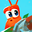

 Another_Crabs_Treasure
Detalles
 |
|
| Tiempo de juego | No Jugado |
| Última actividad | Nunca |
| Añadido | 11/6/2024 14:41:31 |
| Modificado | 11/8/2024 17:36:32 |
| Estado de finalización | No Jugado |
| Librería | Playnite |
| Fuente | 6TB STORE |
| Plataforma | PC (Windows) |
| Fecha de lanzamiento | 4/25/2024 |
| Puntuación de la Comunidad | 92 |
| Puntuación de la Crítica | |
| Puntuación de usuario | |
| Género | Acción Aventura Indie |
| Desarrollador | Aggro Crab |
| Editor | Aggro Crab |
| Característica | Cloud Saves Compat. Total Con Mando Logros De Préstamo Familiar Un Jugador |
| Enlaces | Punto de encuentro Discusiones Guías Noticias Página de la tienda PCGamingWiki Logros |
| Tag | 3D Acción Acción y aventura Adorables Ambientales Buena trama Caricaturescos Divertidos Fantasía oscura Humor negro Mitos y leyendas Mundo abierto No lineales Peleas callejeras Plataformas 3D Rol Rol de acción Subacuáticos Tercera persona Tipo «Dark Souls» |
Descripción
Another Crab’s Treasure is a soulslike adventure set in a crumbling underwater world. As Kril the hermit crab, you’ll need to wear the trash around you as shells to withstand attacks from enemies many times your size. Embark on an epic treasure hunt to buy back your repossessed shell, and discover the dark secrets behind the polluted ocean.


TRASH OR TREASURE?
In this undersea society, trash is not only a way of life, but a valuable resource, used for everything from fashion to firearms. But with the presence of trash comes a mysterious infection known as the Gunk, which could spell doom for the entire ocean.LEARN FROM NATURE
As Kril explores the ocean, he'll gain a variety of Umami Techniques—powerful attacks learned from the denizens of the seas. Punch your enemies with the overwhelming might of a Mantis Shrimp, ensnare them with the horrifying Bobbit Worm, and much more.UNEXPLORED DEPTHS
The ocean goes deeper than one can imagine. Fight your way through kelp forests, coral reefs, sand castle cities, and even the unfathomable darkness of the deep-sea trenches, all in the name of getting back your prized shell.PLAY AT YOUR OWN PACE
Designed to be an approachable experience for newer soulslike players as well as provide a challenge for hardcore fans, Another Crab's Treasure offers something for any level of skill or time commitment. Assist options are provided for those seeking a less frustrating experience, but gluttons for punishment are sure to find the default game a challenge.- Challenging soulslike-inspired combat
- A grand undersea world to explore
- Over 50 shells to try on and fend off attackers
- A variety of powerful Umami Abilities to smite your enemies
- Way Too Many Crabs